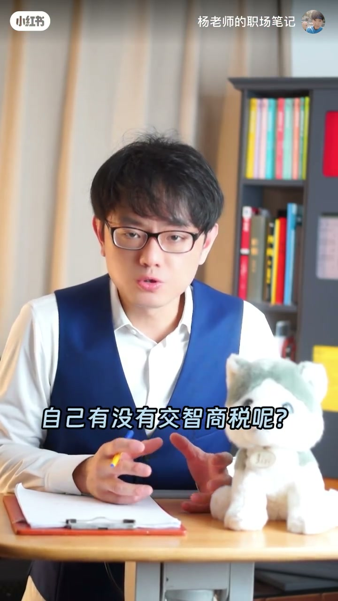
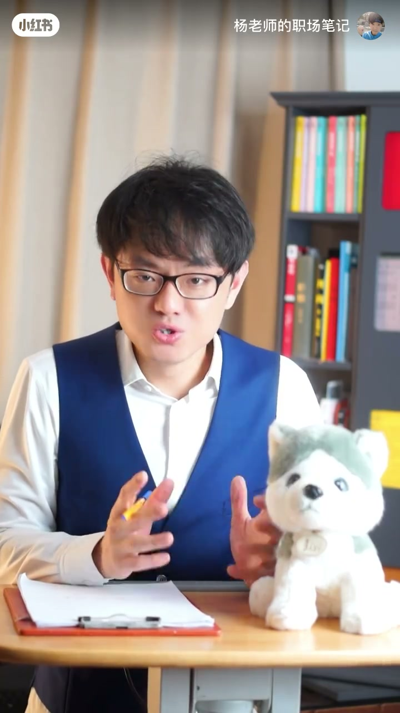

内容要点
每次去理发店都纠结：30 块和 80 块的托尼老师到底有没有区别？会不会花了 80 块剪出 30 块的效果？讲者向小区楼下开理发店的阿姨请教（他常帮阿姨修电脑装软件，阿姨欠他人情），问出了五条干货：手艺有没有差别、低价是不是学徒练手、会不会货不对板、贵在哪儿、理发店真正靠什么赚钱。看完再也不会为理发「交智商税」。
知识结构
对发型没要求的普通男士，30块和80块剪出来基本一致；对发型有要求的女士或爱臭美的男士，80块确实更好。
超低价活动（如79元3次）是学徒练手；付80块剪到30块不会——理发店不砸招牌；付30块拿到80块更不可能，高价位托尼不拿底薪，宁可闲着。
高课单价托尼会买杂志研究、微信群里讨论、刷抖音学大师剪法；理发店剪发不赚钱，真正赚钱的是烫发染发，药水毛利率翻10倍不止。
30块和80块理发师的差别，只在你对发型有没有要求；理发店的真实利润来自烫染药水的差价（毛利率翻10倍不止），而不是那30块的剪发费。
00:00-00:30第一、二条：手艺差别与低价陷阱
开场抛问题：30 块和 80 块的托尼老师到底有没有区别？既想无脑选最便宜的，又对生活有点小小追求；最怕付了 80 块来的却是 30 块手艺的托尼。这问题百度上查不到，好在楼下阿姨开了家 30 平米的理发店，我经常帮她修电脑装软件，她欠我人情，就向她请教，真问出一些新鲜玩意，整理成 5 条清单。
第一条：30 块和 80 块的托尼老师手艺有没有区别？有区别，但对你来说可能无所谓——对发型没有啥要求的普通男士，30 块和 80 块剪出来的基本一致；但如果你是对发型有要求的女士，或者比较爱臭美的男士，80 块的托尼老师剪出来确实要比 30 块的好，他们在经验技术上确实有高下之分。
第二条：如果没啥要求，是不是剪最便宜的就行？不是哦。很多理发店都有学徒；下次你看到理发店搞超低价活动，比如 79 块钱三次，就是学徒练手。你贪人家的便宜，人家拿你的脑袋练手，公平交易。


00:31-01:15第三、四条：货不对板与贵在哪
第三条：有没有可能付了 80 块来的却是 30 块的托尼老师，或者反过来？付了 80 块剪到 30 块不会——理发店不会砸自己的招牌；付 30 块来的是 80 块的托尼老师更加不可能——80 块和 100 块以上的托尼老师在店里是不拿基本工资的，所以他们宁可闲着，也不会听你剪。
第四条：80 块、160 块的托尼老师到底比 30 块强在哪里？答案是对时尚的感知。课单价高的托尼老师会专门买时尚杂志来研究，会在微信群里讨论技巧，会刷抖音看人家大师级的托尼老师是怎么剪的。所以 100 块的托尼老师给你剪下的每一刀，都有他对艺术追求的时间沉淀。
01:16-02:26第五条：理发店真正靠什么赚钱
第五条：理发店到底靠什么赚钱？即使剪头发 30 块、80 块，其实赚不到你的；真正赚钱的是烫发和染发，课单价成百上千的都有。高课单价的托尼老师对烫发染发的把控确实比较厉害，而他们赚的不是对时尚的感知，而是药水的差价。
你会发现，老板会告诉你好的药水价格自然贵，但他不会告诉你：药水的毛利率不是 20%、30%，而是翻 10 倍可能都不止。
最后：怎么样让你刷这条视频的两分钟产生经济价值？答案是转发给你的女朋友或者太太。
完整转录（53段）
以下文本由 Whisper medium 模型自动转录，可能存在少量识别误差，已尽可能修正。
30块和80块的托尼老师到底有没有区别
这是每次去理发店都会纠结的
一方面我觉得只要无脑选最便宜的就可以了
另外一方面对生活还是有点小小追求的
可是我怎么样才能知道自己有没有交支偿税呢
万一我付了80块来的是30块手里的托尼老师呢
这问题百度上查不到
好在最近楼下有位阿姨在小区开了家30平米的理发店
我经常帮这位阿姨修电脑和装软件
她欠我人情 所以我就向她请教了
结果真的问出一些新鲜玩意
下面给你整理成了清单 一共有5条
第一条 30块和80块的托尼老师手艺有没有区别
有区别 但对你来说可能无所谓
因为对于发型没有啥要求的普通男士来说
30块和80块的托尼老师剪出来的基本一致
但如果你是对发型有要求的女士
或者比较爱臭美的男士
那80块的托尼老师剪出来确实要比30块的要好
他们在经验技术上确实有高下之分
第二 如果没啥要求 那是不是剪最便宜的就行了
不是哦 很多理发店都有学徒
第二 如果没有啥要求 下次你看到理发店搞超低价互动
比如79块钱三次就是学徒练手
你贪人家的便宜 人家拿你的脑袋练手 公平交易
第三 有没有可能我付了80块来的是30块的托尼老师
或者反过来 我付了30块来的是80块的托尼老师
大 不可能 付了80块剪到30块
理发店不会砸自己的招牌
而你付了30块来的是80块的托尼老师
更加不可能 为什么呢
80块和100块以上的托尼老师在店里是不拿基本工资的
所以他们宁可闲着也不会听你剪的
第四 80块 160块的托尼老师
到底比30块的托尼老师强在哪里
答案是对时尚的感知
课单价高的托尼老师会专门买时尚杂志来研究
会在微信区讨论技巧
会刷抖音看人家大师弟的托尼老师是怎么剪的
所以100块的托尼老师给你剪下去的每一刀
都有他对艺术追求的时间沉淀
第五 理发店到底靠什么赚钱
即使理发店剪头发30块 80块其实赚不到你的
而真正赚钱的是烫发和染发
课单价成百上千的都有
高课单价的托尼老师对烫发染发的把控确实比较厉害
而他们赚的不是对时尚的感知
而是药水的差价
你发现老板会告诉你好的药水价格自然贵
但他不会告诉你药水的毛利率不是20% 30%
而是翻10倍可能都不止
最后 怎么样让你刷这条视频的两分钟产生经济价值呢
答案是转发给你的女朋友或者太太